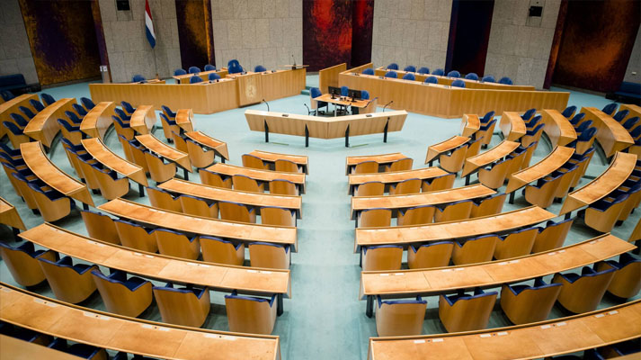
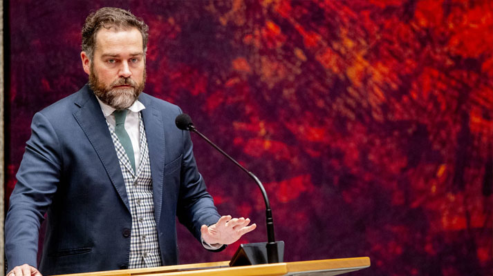
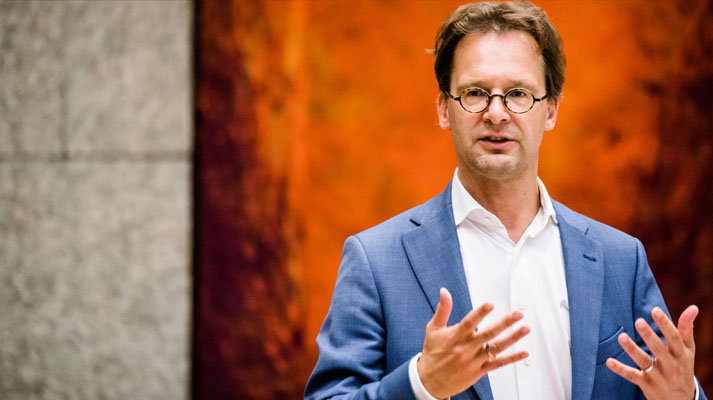
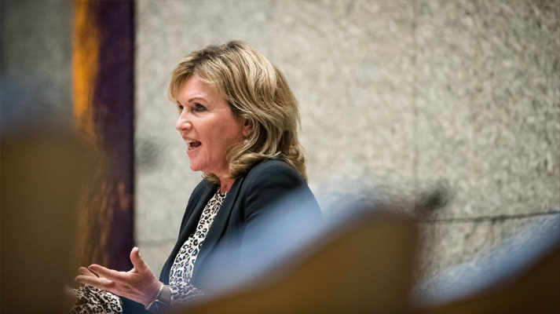
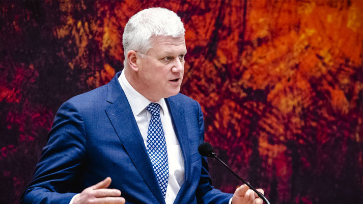

Bijna helft van oude Tweede Kamer vertrekt, verschillende prominenten weg
De Tweede Kamer komt vanmiddag voor het laatst in de oude samenstelling bij elkaar. 68 Kamerleden keren niet terug; sommige omdat ze niet meer op de kandidatenlijst stonden, andere omdat ze niet meer zijn gekozen. Kamervoorzitter Arib zal alle vertrekkers toespreken.
Onder de mensen die afscheid nemen zijn de vroegere fractievoorzitters Klaas Dijkhoff (VVD) en Lodewijk Asscher (PvdA). VVD'er Dijkhoff zit sinds 2010 in de Kamer. Zijn Kamerlidmaatschap werd 2,5 jaar onderbroken, omdat hij staatssecretaris was in het tweede kabinet-Rutte. In 2017 werd hij fractievoorzitter. Dijkhoff werd lange tijd als 'kroonprins' in de VVD gezien, maar in oktober maakte hij bekend dat hij iets heel anders wil gaan doen.
Als fractievoorzitter speelde Dijkhoff een belangrijke rol bij de totstandkoming van het verkiezingsprogramma van de VVD. Daarin richt de partij zich meer op de middengroepen; de VVD wil de "rafelranden van het kapitalisme actief bijschaven".
VVD-Kamerlid Dijkhoff
Asscher is Kamerlid voor de Partij van de Arbeid sinds 2017. Onder zijn leiding leed de PvdA bij de verkiezingen in dat jaar een historisch verlies (van 38 naar 9 zetels). In de daaropvolgende jaren bleef hij met zijn partij in de oppositie.
Hij nam afstand van een aantal maatregelen waaraan hij als PvdA-vicepremier in het tweede kabinet-Rutte had meegewerkt. Het was de bedoeling dat Asscher ook bij de verkiezingen van dit jaar lijsttrekker zou worden, maar hij trok zich in januari terug vanwege zijn rol als minister van Sociale Zaken in de toeslagenaffaire.
Bij de vertrekkers hebben de SP'ers Van Raak en Karabulut en ChristenUnie-Kamerlid Voordewind de langste staat van dienst. Zij zitten sinds 2006 in de Kamer.
Van Raak was pleitbezorger van het referendum en hij was ook de drijvende kracht achter het 'Huis voor Klokkenluiders'. Twee maanden geleden nam de Eerste Kamer een voorstel van Van Raak aan om het correctief bindend referendum in de grondwet op te nemen. De 'tweede lezing' moet nog komen.
SP-Kamerlid Van Raak
Zijn partijgenoot Karabulut was vaak kritisch over militaire missies. Haar motie van wantrouwen tegen minister Bijleveld over de informatievoorziening rond het bombardement op de Iraakse stad Hawija kreeg wel veel stemmen, maar geen meerderheid.
ChristenUnie-Kamerlid Voordewind pleitte geregeld voor een ruimhartig asielbeleid en hij speelde een belangrijke rol bij de onderhandelingen daarover in de vorige formatie. Na veel wikken en wegen ging hij er toen mee akkoord dat er geen kinderpardon zou komen, maar mede op zijn aandrang kwam er begin 2019 alsnog een verruiming.
Dijkstra
Onder de vertrekkers is ook D66-Kamerlid Dijkstra. Vorig jaar diende ze bij de Kamer een initiatiefwet in, die hulp regelt aan ouderen die vinden dat hun leven voltooid is. Het in de coalitie zeer omstreden voorstel is nog niet door de Tweede Kamer behandeld.
Dat ligt anders voor een andere initiatiefwet van Dijkstra, die haar grootste politieke succes werd: haar plan voor een nieuw systeem van donorregistratie haalde een zeer kleine meerderheid in beide Kamers. Kern van de wet is dat mensen als orgaandonor worden geregistreerd tenzij ze hebben laten weten dat ze dat niet willen.
D66-Kamerlid Dijkstra
Ook de 'afgesplitste' Kamerleden Krol en Van Kooten-Arissen keren niet terug. Krol was eerst fractievoorzitter en ook het gezicht van 50Plus. De laatste maanden zat hij als eenmansfractie in de Kamer. Bij de verkiezingen van 17 maart deed hij mee met de lijst Henk Krol, maar hij haalde geen zetel.
Verder verlaat oud-GroenLinks-fractievoorzitter Van Ojik de Kamer. Hij stond niet meer op de kandidatenlijst.
Bij het CDA verdwijnen onder meer ex-voorzitter Van Dam van de ondervragingscommissie toeslagen (het rapport van die commissie leidde uiteindelijk tot de val van het kabinet) en buitenlandwoordvoerder Van Helvert. Zij kregen beiden wel veel voorkeurstemmen, maar niet genoeg voor een zetel.
CDA-Kamerlid Van Dam
Bij de PVV keren drie van de twintig Kamerleden niet terug: Van Aalst, Van Dijk en Jansen. Zij stonden wel op de lijst, maar zijn niet gekozen.
Bij Partij voor de Dieren, SGP en Forum voor Democratie houden alle zittende Kamerleden hun zetel. Bij 50Plus verdwijnen juist alle zittende Kamerleden en bij de ChristenUnie komt alleen fractievoorzitter Segers terug.
Morgen is de eerste vergadering van de nieuwe Kamer. Dan worden alle Kamerleden beëdigd. In de praktijk komen er na de formatie nog wel wat verschuivingen. Als dan Kamerleden minister of staatssecretaris worden, krijgen kandidaten die nu net buiten de boot vallen mogelijk alsnog een zetel.